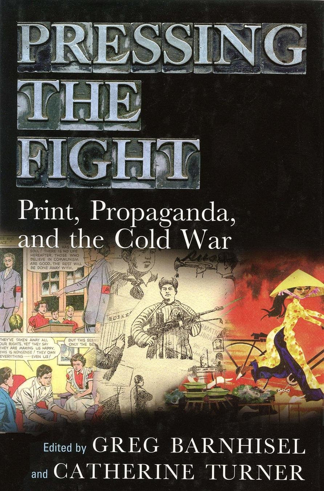
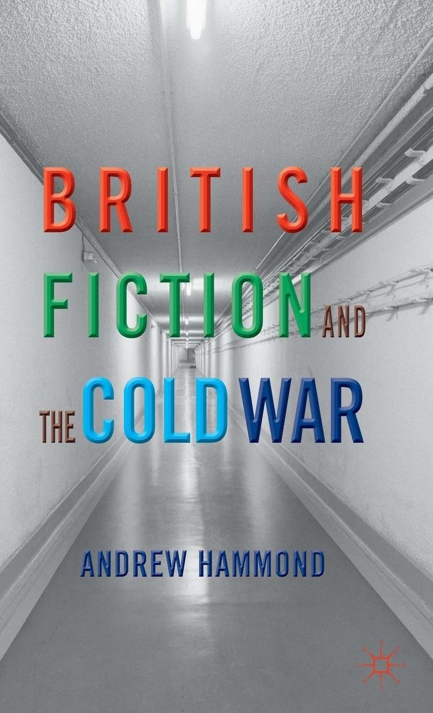
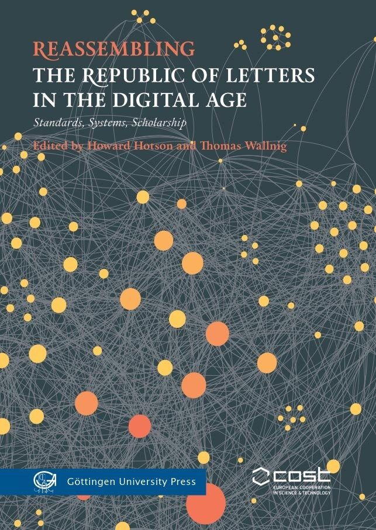
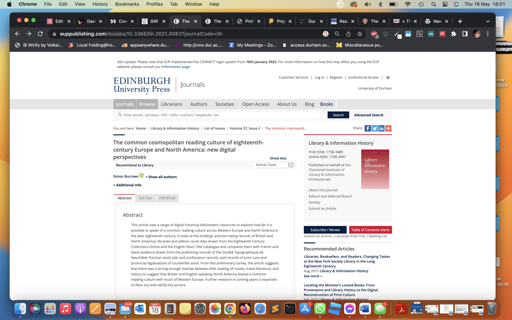
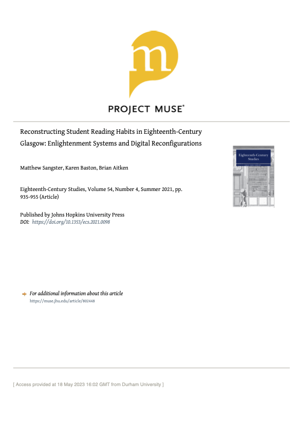
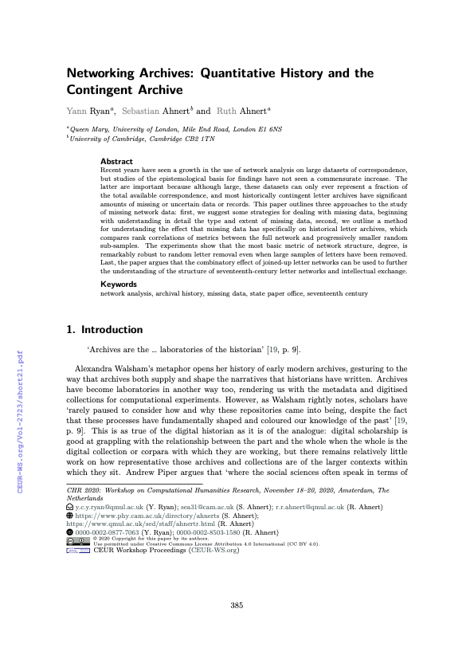
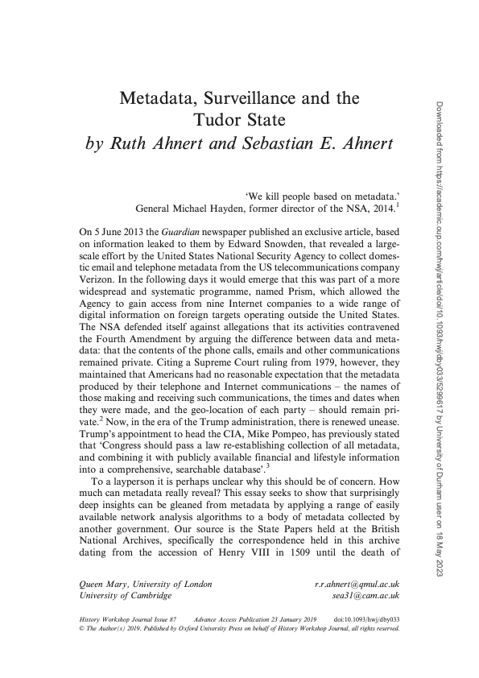

Linked data in the Cold War archive
Katie Muth, katie.muth@durham.ac.uk
James Smith, james.smith3@durham.ac.uk
Whether they liked it or not, whether they knew it or not, there were few writers, poets, artists, historians, scientists or critics in post-war Europe whose names were not in some way linked to [the CIA's] covert enterprise. Unchallenged, undetected for over twenty years, America's spying establishment operated a sophisticated, substantially endowed cultural front in the West, for the West, in the name of freedom of expression.
Saunders (1999), p. 2



A scalable open access knowledge graph connecting
- declassified WWII and Cold War era government documents with
- literary figures implicated in covert cultural diplomacy
With the aim of
- providing intelligence historians, literary scholars, and other researchers a 'bird's-eye' view of covert state influence in the creative sphere
- enriching contextual metadata about literary actors and institutions
- increasing discoverability and interpretability for government document collections
Mapping the cultural/intelligence nexus in Britain and the US, c. 1939–1992





Katie Muth, Durham University
katie.muth@durham.ac.uk
https://krmuth.github.io/